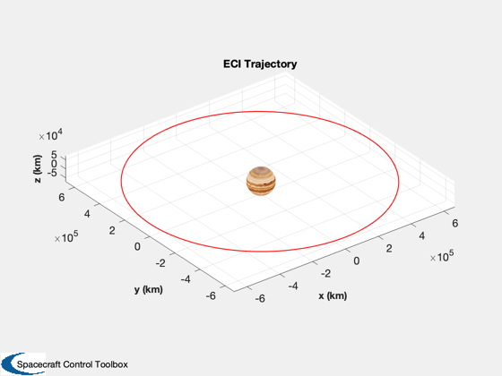
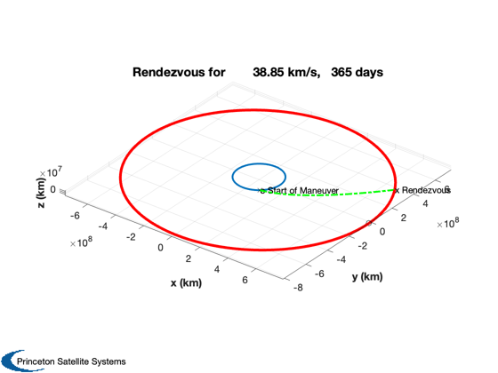
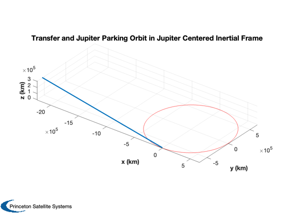

Contents
- Design the Europa Clipper mission using a nuclear fusion engine.
- Script parameters
- Spacecraft Data
- Script Constants
- The sequence of burns
- Start with the Europa and Jupiter orbits
- Search for the best delta-v to get to Jupiter
- Plot the desired orbit
- State at end of transfer (heliocentric frame)
- Compute burn times
- Generate a latex table
- Print out the data
Design the Europa Clipper mission using a nuclear fusion engine.
------------------------------------------------------------------------- See also PlanetTransferLambert, RVFromKepler, OrbTrackECI3D, SolarSystemElements -------------------------------------------------------------------------
%-------------------------------------------------------------------------- % Copyright (c) 2014 Princeton Satellite Systems, Inc. % All rights reserved %--------------------------------------------------------------------------
Script parameters
%-------------------
dateStartSearch = [2032 6 3 0 0 0];
daysTransfer = 365;
Spacecraft Data
%----------------- power = 2e6; % W massPayload = 1241; % kg include specificPower = 1000; massFalcon9 = 8687; % kg structureFrac = 0.04; thrust = 30; % N propulsionEff = 0.6; uE = 82594; hEarthParking = 1000; % 28.5 deg inclination Falcon 9
Script Constants
%------------------ au = Constant('au'); mu = Constant('mu sun'); muJupiter = Constant('mu jupiter'); muEuropa = Constant('mu europa'); rEuropa = Constant('equatorial radius europa'); rEarth = Constant('equatorial radius earth'); g = 9.806;
The sequence of burns
%----------------------- k = 1; dVTitle{k} = 'Delta V Falcon 9 separation'; k = k + 1; dVTitle{k} = 'Delta V First Lambert burn'; k = k + 1; dVTitle{k} = 'Delta V Second Lambert burn'; k = k + 1; dVTitle{k} = 'Delta V Jupiter orbit insertion'; k = k + 1; dVTitle{k} = 'Delta V Europa orbit insertion'; k = k + 1; dVTitle{k} = 'Delta V Total';
Start with the Europa and Jupiter orbits
%------------------------------------------ % Europa orbit respect to the Jovian Equator % http://www.conservapedia.com/Europa_(moon) %------------------------------------------- el = [671000 0.47*pi/180 0 0 0.0094 0]; [rJParkOrb, vJParkOrb] = RVFromKepler( el, [], muJupiter ); OrbTrackECI3D( rJParkOrb, 'Jupiter' ) % For our Jupiter parking orbit we choose a slightly higher orbit %-------------------------------------------------------------- h = 200; % km elEC = el; elEC(1) = elEC(1) + rEuropa + h; % Capture around Europa by just burning into a circular orbit %------------------------------------------------------------ v = VOrbit( elEC(1), elEC(1), muJupiter ); vEuropaOrbit = sqrt(muEuropa/(rEuropa + h)); dV(5) = abs(v - sqrt(muJupiter/el(1)) - vEuropaOrbit);
Search for the best delta-v to get to Jupiter
%----------------------------------------------- dTO = daysTransfer*86400; % Search on this range of start days %----------------------------------- days = 180:10:1080; n = length(days); dVTO = zeros(1,n); jD0 = Date2JD(dateStartSearch); for k = 1:n [dVTO(k), dVA, dVB, elT] = PlanetTransferLambert( jD0 + days(k), dTO, 'Earth', 'Jupiter' ); if( elT(1) < 0 ) dVTO(k) = inf; end end [dVmin,kMin] = min(dVTO); jDLaunch = jD0 + days(kMin); launchDate = JD2Date(jDLaunch); lastLaunchDate = JD2Date(jD0 + days(end));
Plot the desired orbit
%------------------------ PlanetTransferLambert( jDLaunch, dTO, 'Earth', 'Jupiter' ); [dVTOL, dV(2), dV(3), elT] = PlanetTransferLambert( jDLaunch, dTO, 'Earth', 'Jupiter' );
State at end of transfer (heliocentric frame)
%---------------------------------------------- jDEndTrans = jDLaunch + daysTransfer; % Julian date at end of transfer nSteps = 10000; dTOTrans = linspace(0,dTO,nSteps); jDTrans = jDLaunch + dTOTrans*86400; [rTrans, vTrans] = RVFromKepler(elT,dTOTrans,mu); % Jupiter position and velocity at end of transfer %------------------------------------------------- [name, av, ev, iv, Wv, wv, Lv, jDRef, muM, m, radius] = Planets( 'rad', 'Jupiter'); [i, W, w, a, e, L] = SolarSystemElements( iv, Wv, wv, av, ev, Lv, jDLaunch ); elJ = [a*au i W w e (L-W-w)]; [rJup, vJup] = RVFromKepler(elJ,dTOTrans,mu); HelioToJupFrame = Eul2Mat([W,0,i]); % We want to skim the orbit %-------------------------- yMin = min(rJParkOrb(2,:)); % Convert end state of transfer from helio to JFI frame %------------------------------------------------------ rEndTransJupFrame = zeros(3,nSteps); vEndTransJupFrame = zeros(3,nSteps); for k = 1:nSteps rEndTransJupFrame(:,k) = HelioToJupFrame*(rTrans(:,k) - rJup(:,k)) + [0;yMin;0]; vEndTransJupFrame(:,k) = HelioToJupFrame*(vTrans(:,k) - vJup(:,k)); end r3 = [rEndTransJupFrame(1,end-40:end);rEndTransJupFrame(2,end-40:end);rEndTransJupFrame(3,end-40:end)]; Plot3D(r3,'x (km)','y (km)','z (km)','Transfer and Jupiter Parking Orbit in Jupiter Centered Inertial Frame',[],1); hold on plot3(rJParkOrb(1,:), rJParkOrb(2,:), rJParkOrb(3,:),'r'); axis equal rotate3d on dVI = zeros(1,size(vJParkOrb,2)); for k = 1:size(vJParkOrb,2) dVI(k) = Mag(vEndTransJupFrame(:,end) - vJParkOrb(:,k)); end dV(4) = min(dVI); % Earth escape %------------- r = hEarthParking + rEarth; vEarthParking = VOrbit(r,r); vEarthEscape = VEscape(r); dV(1) = vEarthEscape - vEarthParking; % Sum the table %-------------- dV(6) = sum(dV(1:5)); massDry = massPayload + power/specificPower; [mF, mT] = RocketMass( uE/g, massDry, structureFrac, dV(6) );
Compute burn times
%-------------------- propUsedPerSec = thrust/uE; % thrust/Isp*g (kg/s) [mF1,mT1] = RocketMass( uE/g, massDry, structureFrac, dV(1) ); burnTime(1) = mF1/propUsedPerSec; % burn time in seconds [mF2,mT2] = RocketMass( uE/g, massDry, structureFrac, dV(2) ); burnTime(2) = mF2/propUsedPerSec; % burn time in seconds [mF3,mT3] = RocketMass( uE/g, massDry, structureFrac, dV(3) ); burnTime(3) = mF3/propUsedPerSec; % burn time in seconds [mF4,mT4] = RocketMass( uE/g, massDry, structureFrac, dV(4) ); burnTime(4) = mF4/propUsedPerSec; % burn time in seconds [mF5,mT5] = RocketMass( uE/g, massDry, structureFrac, dV(5) ); burnTime(5) = mF5/propUsedPerSec; % burn time in seconds burnTimeDays = burnTime/(24*60*60); burnTimeDays(6) = sum(burnTimeDays);
Generate a latex table
%------------------------ sT = cell(9,2); for k = 1:6 sT{k,1} = dVTitle{k}; sT{k,2} = sprintf('%4.2f (km/s) Burn Duration %4.1f (days)',dV(k), burnTimeDays(k)); end k = k + 1; sT{k,1} = 'Mass Total'; sT{k,2} = sprintf('%5.1f (kg)',mT); k = k + 1; sT{k,1} = 'Mass Fuel'; sT{k,2} = sprintf('%5.1f (kg)',mF); k = k + 1; sT{k,1} = 'Thrust'; sT{k,2} = sprintf('%4.1f (N)',thrust); k = k + 1; sT{k,1} = 'Power'; sT{k,2} = sprintf('%4.1f (MW)',power/1e6); k = k + 1; sT{k,1} = 'Mass Falcon 9'; sT{k,2} = sprintf('%5.1f (kg)',massFalcon9); k = k + 1; sT{k,1} = 'Launch Date'; sT{k,2} = sprintf('%s',JDToDateString(jDLaunch)); disp(sT)
{'Delta V Falcon 9 separation' } {'3.04 (km/s) Burn Duration 3.9…'}
{'Delta V First Lambert burn' } {'20.89 (km/s) Burn Duration 30.…'}
{'Delta V Second Lambert burn' } {'17.95 (km/s) Burn Duration 25.…'}
{'Delta V Jupiter orbit insertion'} {'4.74 (km/s) Burn Duration 6.1…'}
{'Delta V Europa orbit insertion' } {'1.37 (km/s) Burn Duration 1.7…'}
{'Delta V Total' } {'48.01 (km/s) Burn Duration 67.…'}
{'Mass Total' } {'5984.1 (kg)' }
{'Mass Fuel' } {'2637.6 (kg)' }
{'Thrust' } {'30.0 (N)' }
{'Power' } {' 2.0 (MW)' }
{'Mass Falcon 9' } {'8687.0 (kg)' }
{'Launch Date' } {'08/02/2034 00:00:00.00' }
Print out the data
%------------------- CreateTable(sT,1); %-------------------------------------- % PSS internal file version information %-------------------------------------- % $Id: 10368a24cf6956e9f8da0412b893e477b5a8dc0a $
Delta V Falcon 9 separation - 3.04 (km/s) Burn Duration 3.9 (days)
Delta V First Lambert burn - 20.89 (km/s) Burn Duration 30.1 (days)
Delta V Second Lambert burn - 17.95 (km/s) Burn Duration 25.3 (days)
Delta V Jupiter orbit insertion - 4.74 (km/s) Burn Duration 6.1 (days)
Delta V Europa orbit insertion - 1.37 (km/s) Burn Duration 1.7 (days)
Delta V Total - 48.01 (km/s) Burn Duration 67.1 (days)
Mass Total - 5984.1 (kg)
Mass Fuel - 2637.6 (kg)
Thrust - 30.0 (N)
Power - 2.0 (MW)
Mass Falcon 9 - 8687.0 (kg)
Launch Date - 08/02/2034 00:00:00.00